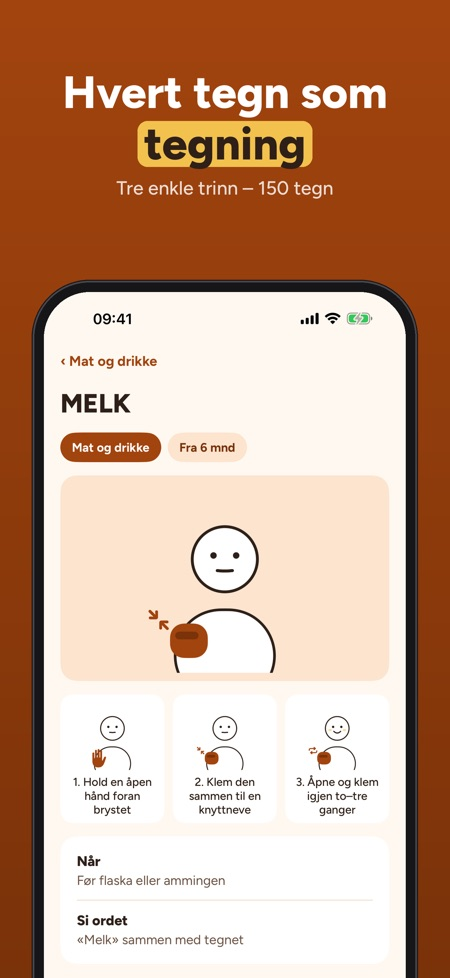

Signs before your baby talks. Sign with your baby: 150 signs with drawings and simple steps, a week plan with five signs and a diary for the first signs – works offline.



Babyhender helps you use simple signs with your baby before the words come – one small sign at a time, in everyday life.
30 signs in 3 categories, the first week plan, the diary and the tips can be used without a purchase. The full version is a one-time purchase that unlocks all 150 signs, new week plans, songs, games and progress. No subscription.
The signs are simple everyday gestures for babies, drawn by us. Babyhender is independent, not affiliated with any sign language organisation, and does not give medical advice.